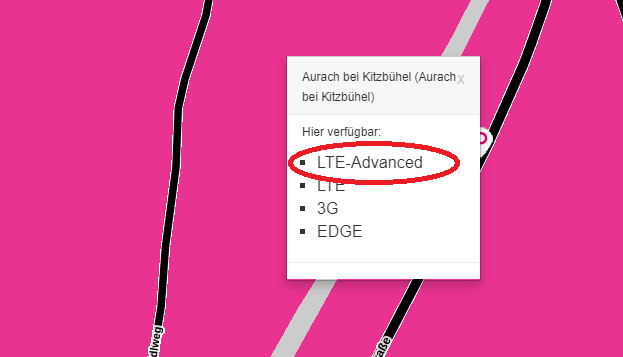
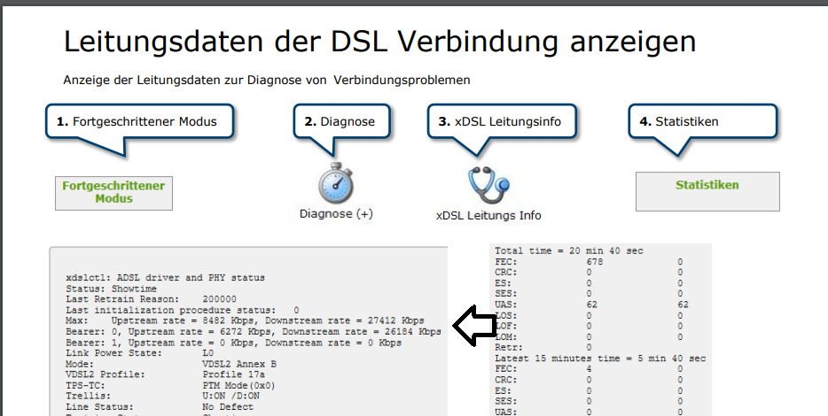

Da mein derzeitiger Internetanschluss (A1) für zu Hause eher selten funktioniert und keine Besserung in Sicht ist möchte ich zu Magenta wechseln.
Laut Verfügbarkeitscheck ist an meinen Standort kein Festnetzinternet möglich, nun interessiere ich mich für die Flextarife.
Flex 40 wird ja mit einer Bandbreite von D 40 Mbit/s Up 8 Mbit/s
beworben.
Flex 75 ....................................................D 75 Mbit/s Up 15 bit/s....
Frage 1:
Gibt es eine
Mindestbandbreite die Magenta leisten muss
damit sie ihre Leistung erfüllen?
Ich möchte vermeiden dass ich wieder 24 Monate an einen Vertrag gebunden bin mit dem ich Abends und am Wochenende einfach nie fernsehenkann weil das Netz zu sehr ausgelastet ist.
Frage 2:
Angenommen ich habe mit Flex 40 (Verwendungsklasse
G
) aufgrund der Auslastung gerade eine Bandbreite von Down 10 Mbit/s,
hätte ich mit dem Tarif Flex 75 (Verwendungsklasse
E
) dann bei selber Auslastung eine höhere Bandbreite?
Wie funktioniert das mit diesen Verwendungsklassen/Bandbreitenoptimierung?
Bearbeitet
von Magneto
Änderung
IT-Freak
Es gibt keine Mindestgeschwindigkeit, da LTE.
Ich würde dir empfehlen einen Router am freien Markt bzw. gebraucht kaufen und dazu Magenta Klax nehmen.
Edit: Das startpaket mit Box würde ich nicht nehmen, da die Box nicht so gut ist.
Bearbeitet
von IT-Freak
Rexalius2000
Internet über Mobilfunk ist ein Shared Medium, sprich du teilst dir die Bandbreite mit anderen Usern in der Mobilfunkzelle. Es kommt auch darauf an wie weit du von der Zelle entfernt bist oder welche Frequenzen diese aussendet oder deine Hardware (Router/Smartphone)verarbeiten kann .Ich würde dir empfehlen mit einem
Internet Klax 30 Startpaket
die Performance zu testen. Es gibt keine Bindung und diese Karte könntest du auch wenn dein Smartphone keinen SIM-lock hat zum testen über Tethering verwenden. Zudem befindet sich die Karte in der Nutzungsklasse A also ganz oben an der Fahnenstange
.
Vom Alcatel Router rate ich auch ab und würde mich um einen Modell mit Carrier Aggregation(Bündelung von Frequenzen) umschauen. Der B529 von Huawei ist manchmal sehr günstig zu bekommen.
Bearbeitet
von Rexalius2000
Magneto
Hi IT-Freak!
Danke für deine Antwort!
vor 14 Minuten schrieb IT-Freak:
Es gibt keine Mindestgeschwindigkeit, da LTE.
Ich würde dir empfehlen einen Router am freien Markt bzw. gebraucht kaufen und dazu Magenta Klax nehmen.
Ja, Klax 30 habe ich mir auch schon angesehen. Hoffe nur dass sich Netflix mit der beworbenen Bandbreite D 30Mbit/Up 6Mbit ausgeht.
Im schlimmsten Fall bin ich eh nicht vertragsgebunden, den Router hätte ich halt.
Kannst du mir einen Router empfehlen?
Bin da technisch echt planlos.
NTM
vor 43 Minuten schrieb Magneto:
Frage 1:
Gibt es eine
Mindestbandbreite die Magenta leisten muss
damit sie ihre Leistung erfüllen?
Ich möchte vermeiden dass ich wieder 24 Monate an einen Vertrag gebunden bin mit dem ich Abends und am Wochenende einfach nie fernsehenkann weil das Netz zu sehr ausgelastet ist.
Wie meine Vorredner bereits geschrieben haben, gibt es nicht.
Aber die Flex Tarife gibt es auch ohne Bindung (aber mit Router), wenn man auf alle Aktionen verzichtet (volle Grundgebühr ab dem ersten Monat und die einmalige Aktivierungsgebühr. Die Anmeldung ohne Bindung geht aber nicht im Online-Shop.
vor 43 Minuten schrieb Magneto:
Angenommen ich habe mit Flex 40 (Verwendungsklasse
G
) aufgrund der Auslastung gerade eine Bandbreite von Down 10 Mbit/s,
hätte ich mit dem Tarif Flex 75 (Verwendungsklasse
E
) dann bei selber Auslastung eine höhere Bandbreite?
Wie funktioniert das mit diesen Verwendungsklassen/Bandbreitenoptimierung?
Theoretisch umso mehr maximale Bandbreite und umso höhere Nutzungsklasse = mehr Bandbreit bei Auslastung.
Aber ab einem gewissen Punkt wird man den Unterschied in der Praxis nicht merken.
vor 17 Minuten schrieb Rexalius2000:
Ich würde dir empfehlen mit einem
Internet Klax 30 Startpaket
die Performance zu testen. Es gibt keine Bindung und diese Karte könntest du auch wenn dein Smartphone keinen SIM-lock hat zum testen verwenden. Zudem befindet sich die Karte in der Nutzungsklasse A also ganz oben an der Fahnenstange
.
Der ist in Verwendungsgruppe B, was aber auch ganz gut ist.
vor 14 Minuten schrieb Magneto:
Ja, Klax 30 habe ich mir auch schon angesehen. Hoffe nur dass sich Netflix mit der beworbenen Bandbreite D 30Mbit/Up 6Mbit ausgeht.
Wenn die vollen 30 Mbit/s ankommen, sollte das auch für einen 4K Netflix Stream reichen.
Bearbeitet
von NTM
Rexalius2000
Checke bitte auch die
Magenta Netzabdeckung
und achte ob bei dir
LTE-Advanced
verfügbar ist. Nachdem Wert kann man dir besser einen Router empfehlen.

Magneto
vor 13 Minuten schrieb Rexalius2000:
Ich würde dir empfehlen mit einem
Internet Klax 30 Startpaket
die Performance zu testen. Es gibt keine Bindung und diese Karte könntest du auch wenn dein Smartphone keinen SIM-lock hat zum testen über Tethering verwenden. Zudem befindet sich die Karte in der Nutzungsklasse A also ganz oben an der Fahnenstahne..
Das mit dem Smartphone ist eine gute Idee!
Ja fast, in den Entgeltbestimmung steht allerdings
Verwendungsklasse
B.
In den Entgeltbestimmungen habe ich jetz noch folgenden Text gefunden:
"Die Nutzung von INTERNET KLAX Tarifen ist nur in Verbindung mit einem INTERNET KLAX Box/Router von Magenta und nur im LTE Netz von T-Mobile Austria möglich."
Ist das tatsachlich nur mit dem Magenta Router möglich oder bemerken die eh nicht welches Gerät ich verwende?
Rexalius2000
Okay dann habe ich das wohl falsch in Erinnerung mit der Nutzungsklasse. Aber B ist schon ziemlich gut auch.
Was für ein Smartphone verwendest du?
Bearbeitet
von Rexalius2000
NTM
vor 5 Minuten schrieb Magneto:
In den Entgeltbestimmungen habe ich jetz noch folgenden Text gefunden:
"Die Nutzung von INTERNET KLAX Tarifen ist nur in Verbindung mit einem INTERNET KLAX Box/Router von Magenta und nur im LTE Netz von T-Mobile Austria möglich."
Ist das tatsachlich nur mit dem Magenta Router möglich oder bemerken die eh nicht welches Gerät ich verwende?
Ja an sich wissen sie es, aber es ist in der Praxis egal. Habe auch so eine Sim und die war schon in allen möglichen Geräten im Einsatz (verschiedene Router, Handys und Tabletts). Macht eigentlich keinen Sinn die Sim ohne Gerät zu verkaufen, aber zu schreiben geht nur mit dem von Magenta.
Bearbeitet
von NTM
Magneto
vor 8 Minuten schrieb Rexalius2000:
Checke bitte auch die
Magenta Netzabdeckung
und achte ob bei dir
LTE-Advanced
verfügbar ist. Nachdem Wert kann man dir besser einen Router empfehlen.
Ja gerne, Ergebnis:
Hier verfügbar:
5G
LTE-Advanced
LTE
3G
EDGE
IT-Freak
Ok, dann könntest du auch in die Richtung 5G Router überlegen. Mittlerweile gibt es schon die ersten Outdoor Router, was beim Empfang Vorteile bringt.
Rexalius2000
Sind optimale Bedingungen die du da hast. Der Sender ist sicher auch gut am Netz angebunden wenn er bereits 5G ausstrahlt.
Magneto
vor 14 Minuten schrieb Rexalius2000:
Was für ein Smartphone verwendest du?
Mein Xiaomi kann nur 4G, aber im Bekanntenkreis finde ich sicher jemanden mit einem aktuelleren Smartphone.
Rexalius2000
Es gibt auch die Möglichkeit des Fernabsatzes. Das heißt wenn du z. B. einen Vertrag Online bestellst kannst du innerhalb von 14 Tagen wieder zurücktreten, wenn die Geschwindigkeit nicht deinen Anforderungen entspricht. Zudem gibt es derzeit -20% auf 24 Monate.
https://www.magenta.at/handytarife/womanday
Bearbeitet
von Rexalius2000
IT-Freak
vor 9 Minuten schrieb Rexalius2000:
Es gibt auch die Möglichkeit des Fernabsatzes. Das heißt wenn du z. B. einen Vertrag Online bestellst kannst du innerhalb von 14 Tagen wieder zurücktreten, wenn die Geschwindigkeit nicht deinen Anforderungen entspricht. Zudem gibt es derzeit -20% auf 24 Monate.
https://www.magenta.at/handytarife/womanday
Darauf würde ich mich nicht einlassen. Was macht man wenn nach z.B einem Monat sich die Situation stark ändert.
Das Vergnügen hatte ein Nachbar. Er konnte sich dann Dank einer Preiserhöhung mit dem Sonderkündigungsrecht retten.
Rexalius2000
Ein Gewisses Rest Risiko hat man bei einem Mobilen Internet Zugang immer, eine nur minimale abweichende Bandbreite gibt es halt nur über einen Zugang über Kabel/DSL .
Bearbeitet
von Rexalius2000
Magneto
vor 3 Minuten schrieb Rexalius2000:
Ein Gewisses Rest Risiko hat man bei einem Mobilen Internet Zugang immer, eine konstante und nur minimale abweichende Bandbreite gibt es halt nur über einen Zugang über Kabel/DSL .
Kann ich nicht bestätigen.
Ich habe einen A1 Festnetzzugang über unser altes Telefonkabel aus dem Jahre Schnee. Nachts und tagsüber habe ich eine Bandbreite von ca. 16Mbit Down und 4-5 Mbit Up. Unter der Woche beginnen die Werte täglich ab ca 16 Uhr langsam zu sinken bis garnichts mehr geht und schießlich die Verbindung zwischen Router und Internet abbricht. Am Wochenende schon früher, besonders bei schlechter Wetterlage.
Über die A1 Hotline erreiche ich Abends selten jemanden, wenn doch schicken sie mir unter den Techniker ein paar Tage später vorbekommt und irgendwas rumbastelt, einen Speedtest macht und dann bestätigt dass es eh funktioniert. Danach wieder das selbe.
Das geht jetzt schon ein Jahr so dahin. Ich höre immer dass es bei fixen Leitungen solche Schwankungen nicht gibt.
Trotzdem ist es so. Ich kenne die technischen Hintergründe nicht, der Techniker vermutlich schon.
Nun gebe ich auf und versuche aus dem Vertrag rauszukommen.
IT-Freak
Ja das kann schon vorkommen. Bei DSL stören sich die Leitungen gegenseitig. Im kilobit Bereich kann man es relativ schnell sehen. Wenn die Leitung fehlerhaft ist, dann verstärkt das diese Effekte.
Rexalius2000
Auch Freileitungen wie meine die fast 40 Jahre alt ist funktioniert heute noch, nur im Sommer wenn es richtig heiß ist merkt man wie bereits erwähnt das die Bandbreite in Kilobyte Bereich etwas sinkt. Wenn man das nicht im Modem genau beobachtet fällt das auch keinen auf .Aber die Schwankungen sind da.
@Magneto
Verwendest du zufällig einen Hybrid Zugang ? Den deine Schwankungen wären mit einem reinen DSL Zugang schon ziemlich groß.
Bearbeitet
von Rexalius2000
Magneto
vor 2 Minuten schrieb Rexalius2000:
Verwendest du zufällig einen Hybrid Zugang ?
Nein, den hat mir A1 schon angeboten. Natürlich mit Aufpreis und Vertragsbindung.
Ich wohne in einem 400 Jahre alten Haus, die Telefondose wo auch der Router steht befindet sich in einem Raum mit dicken Steinmauern und Steingewölbe. Das WLAN- Signal im Haus ist ausreichend. Als Stellplatz für einen Router für Mobilfunk bietet dieser Raum aber schlechteste Vorraussetzungen.
Rexalius2000
Interessant wären deine Leitungswerte. Vielleicht kann man deinen bestehenden Anschluss sogar schon auf VPLUS umrangieren.
Ich glaube, dass bei der Leitung kein VPLUS möglich ist.
Rexalius2000
Manchmal ist es leider so ,dass Anschlüsse noch auf dem veralteten VDSL hängen aber bereits VDSL2 oder sogar VPLUS verfügbar wäre. Kenne einige Fälle wo erst nach etwas Nachdruck bei A1 der Teilnehmer umrangiert wurde.
Magneto
vor 12 Stunden schrieb Rexalius2000:
Interessant wären deine Leitungswerte. Vielleicht kann man deinen bestehenden Anschluss sogar schon auf VPLUS umrangieren.
OK, da müsste die 16 MBit/s ziemlich solide ankommen. Geht der sync des Modems runter, zu den Stoßzeiten?
Wenn nein, ist der dslam überlastet.
Rexalius2000
Die Werte sind nicht schlecht und sogar besser wie bei mir. Wenn es zu einem Ausfall kommt, bleibt das Modem Synchron also leuchtet die DSL Leuchte weiterhin oder blinkt diese? Interessant wäre auch was im Modem ankommt.
Magneto
Hallo liebe Forumteilnehmer!
Da mein derzeitiger Internetanschluss (A1) für zu Hause eher selten funktioniert und keine Besserung in Sicht ist möchte ich zu Magenta wechseln.
Laut Verfügbarkeitscheck ist an meinen Standort kein Festnetzinternet möglich, nun interessiere ich mich für die Flextarife.
Flex 40 wird ja mit einer Bandbreite von D 40 Mbit/s Up 8 Mbit/s
beworben.
Flex 75 ....................................................D 75 Mbit/s Up 15 bit/s....
Frage 1:
Gibt es eine
Mindestbandbreite die Magenta leisten muss
damit sie ihre Leistung erfüllen?
Ich möchte vermeiden dass ich wieder 24 Monate an einen Vertrag gebunden bin mit dem ich Abends und am Wochenende einfach nie fernsehenkann weil das Netz zu sehr ausgelastet ist.
Frage 2:
Angenommen ich habe mit Flex 40 (Verwendungsklasse
G
) aufgrund der Auslastung gerade eine Bandbreite von Down 10 Mbit/s,
hätte ich mit dem Tarif Flex 75 (Verwendungsklasse
E
) dann bei selber Auslastung eine höhere Bandbreite?
Wie funktioniert das mit diesen Verwendungsklassen/Bandbreitenoptimierung?
Bearbeitet
von Magneto
Änderung
Magneto
vor 4 Stunden schrieb IT-Freak:
OK, da müsste die 16 MBit/s ziemlich solide ankommen.
Wenn es gerade (außerhalb der Stoßzeiten) läuft, dann läuft es richig gut mit 16 Mbit/s.
Wenn es nur gerade wieder zum rumzicken beginnt, dann habe ich (gestern Abends z.B 6 Mbit/s down, danach 2 Mbit/s down) und weniger bis dann garnichts mehr geht.
Meine Geräte (Smartphone, Notebook, TV's) zeigen in unterschiedlicher Art. "Nicht mit dem Internet verbunden" Kein Internetsignal", usw. an. Mit dem WLAN sind sie zu dem Zeitpunkt aber noch verbunden.
Wenig später ist dann auch das WLAN-Signal weg und ich kann meine Geräte nicht mehr verbinden. Ich ziehe den Netzstecker vom Router und stecke wieder ein. Intenet geht dann manchmal wieder (wenn auch schlecht, bricht ab und das ganze beginnt wieder von vorne.)
vor 4 Stunden schrieb IT-Freak:
Geht der sync des Modems runter, zu den Stoßzeiten?
Wenn nein, ist der dslam überlastet.
Wie kann ich das verstehen?
Wenn ich eine Störung habe wo nichts mehr geht leuchtet die DSL LED am Router (ADB VV2220) durchgehend.
Upstream bleibt laut meinen letzen Beobachtungen immer ca gleich mit 4,8 Mbit/s, auch wenn der Downstream bereits niedriger geworden ist gerade einbricht. Bing: 14 ms
Rexalius2000
Hast du schon versucht den WLAN Kanal zu ändern?
Router/Modem schon mal ausgetauscht?
Das VV2220 von ADB ist doch schon ein älteres Teil das nicht mal 5 GHz kann.
IT-Freak
Den Sync sieht man am Webinterface des Routers: 10.0.0.138
Rexalius2000
Interessant wäre auch was am Router tatsächlich ankommt bzw. was im Systemprotokoll bei einem Ausfall alles hinterlegt ist.
Einstieg in das Modem mit 10.0.0.138
Mit „Login“ den vorgegebenen Benutzernamen „admin“ ohne Passwort bestätigen

Christian_E
Noch was anderes.
Ich hab gelesen, dass es sich um ein altes Haus mit dicken Mauern handelt.
Da könnte es indoor bei 4G oder 5G schon zu Verlusten kommen, die sich, je nachdem, auch größer auswirken können.
Vielleicht auch anfreunden damit, dass eine externe Antenne notwendig ist.
Nur so als Gedanke - muss ja nicht sein aber kann nutzen.
Rexalius2000
Aber wenn dann nur eine die mehr als 1 LTE Band unterstützt . Sollte die Mobilfunkstadion in Sichtweite sein,wäre auch eine Richtfunkantenne vorteilhaft.
Christian_E
Ja klar, wobei es aktuell eh sinnvollerweise meist nur noch Multiband Antennen gibt. Die 800er werden immer weniger. Ich hab keinen Sicht Kontakt und komm trotzdem mit einer Richtfunkantenne gut zurecht. Zumindest aber die Richtung sollte man wissen, wo der Mast ist.
Das ist die bessere Variante. Ich hab allerdings die Antenne langsam im Kreis gedreht und mit lte watch die Werte kontrolliert. Macht es spannender. ?
Christian_E
Ach ja und nicht nur drehen, sondern auch vertikale Veränderungen können den Pegel verbessern.
Rexalius2000
Ich habe mir gestern eine Klax 30 Starpaket bestellt. Mal schauen wie der Speed in der Nutzungsklasse B ist. Mit dem eingemieteten Provider im Magenta Netz bin ich überhaupt nicht zufrieden. Der Sender ist ja nur einen Steinwurf von meine Höhle entfernt und sendet auf B20/B3/B1 und bringt in der derzeitigen Klasse C schon viel bessere Werte
Bearbeitet
von Rexalius2000
IT-Freak
Am 28.9.2020 um 17:05 schrieb Magneto:
Ja gerne, Ergebnis:
Hier verfügbar:
5G
LTE-Advanced
LTE
3G
EDGE
Da ist eine klassische Antenne nicht mehr zielführend. Mit einer Richtfunk Antenne bekommt man maximal LTE 2x2. (Es steht zwar auf manchen Antennen 5G oben aber die können gewisse Vorteile vom 5G nicht ausnutzen.)
Richt Antenne hilft nur dann, wenn man gezielt einen anderen Sender anpeilen möchte, mit dem Nachteil, das man dann gewisse Features verliert.
Ich tendiere eher zu einem Outdoor Gerät, was mehr oder weniger eine Richt Antenne eingebaut hat. Selbstverständlich hat es einen geringeren Antennengewinn, dafür kann es die volle MIMO Kapazität und 5G Funktionalität ausspielen.
Für den Anfang tuts ein <=30€ Router von Willhaben. Da gibt es auch welche mit CAT6 LTE und frei für alle Netze
Rexalius2000
Huawei B529, B535 bekommt man alle so um die 30-60 € und sind alles CAT 6 Geräte. Nur auf keinen Fall diesen lahmen HH40 von Alcatel kaufen.
IT-Freak
Für ein langfristiges gutes Setup bewegt man sich dann so Kostenmäßig im Bereich 300€ aufwerts. Aber nur für ein/zwei Monate zum Testen zahlt sich das nicht aus. Auch wird ein besseres Setup nicht unbedingt den Performance Schub bringen, im Vergleich zu den Kosten.
(Ich habe gerade jemanden ein 800€ Netzwerksetup vorgeschlagen, wobei ich da bei allen Komponenten noch die günstigeren genommen habe. Wenn man da etwas gutes möchte, dann kostet das schon.)
Rexalius2000
Momentan verwende ich einen B535 parallel zu meinem 20 /5 DSL Zugang. War auch schon beim überlegen mir einen M2 von Netgear zu kaufen aber das ist doch dann am hohen Preis gescheitert.
{kind=link}